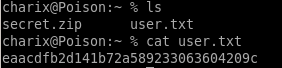

Index
poison
nmap
all ports
http
gobuster
ini.php
info.php
phpinfo
listedfiles.php
foothold 1 backuppasswd.txt
base64_decode.py
scriptname = /etc/passwd
ssh charix
foothold 2: phpinfo.php race condition
race condition concept w/ burp
phpinfo.php php variables
payloadallthethings
revshell.php
phpinfolfi.py
tweak REQ1
tweak tmp_name phpinfo output
run
/var/log/httpd-access.log
foothold 3: Log Poisoning
user-agent manipulation
user-agent php code execution
Warning about using double-quotes
injecting php system call
hostname & ls -la
reverse shell
priv esc
secret.zip exfiltration
ps -aux
VNC
VNC port 5901
tunnel port 5901 through localhost
vncviewer within tunneled localhost
root
user/root
lessons learned
user/root

user: eaacdfb2d141b72a589233063604209c
root: 716d04b188419cf2bb99d891272361f5